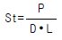
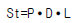
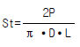
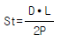
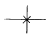
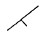
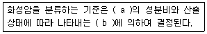
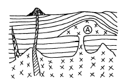
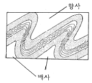

화약취급기능사 (2004-10-10 기출문제)
1과목: 화약 및 발파
1. 공업 뇌관용 뇌홍폭분 제조 시 풀민산 수은(Ⅱ)(Hg(ONC)2)와 염소산칼륨(KClO3)의 배합비율은?
- 94 : 6
- 80 : 20
- 20 : 80
- 6 : 94
(정답률: 알수없음)

2. 니트로글리세린 약 얼마정도를 니트로글리콜로 대치하면 난동 다이너마이트라고 하는가?
- 10%
- 15%
- 20%
- 25%
(정답률: 알수없음)
3. 뇌관에 대한 설명이다. 틀린 것은?
- 뇌관은 관체와 내관으로 되어 있으며 내부에는 기폭 약 및 첨장약이 충전되어 있다.
- 뇌관의 규격은 안지름 6.2㎜, 바깥지름 6.5㎜로 되어있다.
- 전기뇌관은 보통 공업뇌관에 전교 장치를 한 것이다.
- 기폭약으로 풀민산수은(II)를 사용할 때의 뇌관의 관체는 알루미늄을 사용한다.
(정답률: 알수없음)
4. 다음 조건에서 폭약의 선택이 가장 올바른 것은?
- 수분이 있는 곳에서는 내열성 폭약을 사용한다.
- 장공폭파에는 비중이 큰 폭약을 사용한다.
- 굳은 암석은 동적효과가 적은 폭약을 사용한다.
- 강도가 큰 암석은 에너지가 큰 폭약을 사용한다.
(정답률: 알수없음)
5. 암석의 폭파에 대한 저항성을 나타내는 계수는?
- 누두계수
- 암석계수
- 전색계수
- 폭약계수
(정답률: 알수없음)
6. 다음 심빼기 발파에서 평행공 심발법에 해당하는 것은 어느 것인가?
- 노르웨이 심빼기
- 부채살 심빼기
- 코로만트 심빼기
- 피라미드 심빼기
(정답률: 알수없음)
7. 오스트리아에서 개발된 터널 개착법으로 암반이 연약하고 지압이 큰 곳이나 도시의 지하철 공사장에서 많이 사용되며 우리나라에서도 1982년 서울 지하철공사에서 도입한 방법은 어느 것인가?
- 쉴드공법
- NATM 공법
- 개착공법
- TBM 공법
(정답률: 알수없음)
8. 배면만이 모암과 접촉된 암체는 몇 자유면인가?
- 3 자유면
- 4 자유면
- 5 자유면
- 6 자유면
(정답률: 알수없음)
9. 전기발파의 결선방법과 거리가 먼 것은?
- 직렬결선
- 직병렬결선
- 병렬결선
- 조합결선
(정답률: 알수없음)
10. 기명전압 20[V], 전류 1.2[A], 내부저항 3.0[Ω]인 소형 발파기를 사용하여 1.2m 각선이 달린 뇌관 6개를 직렬로 접속하여 50m 거리에서 발파하려고 할 때 소요전압은? (단, 전기뇌관 1개의 저항 0.97[Ω], 모선 1m의 저항은 0.021[Ω]이다.)
- 11.104[V]
- 12.104[V]
- 13.104[V]
- 14.104[V]
(정답률: 알수없음)
11. 너비가 18m, 높이가 7.5m인 터널에서 Smooth Blasting(스무스 블라스팅)을 실시하려고 한다. Decoupling(디카플링)지수를 1.6으로 하고, 천공지름을 45㎜로 하였을 때 적당한 폭약의 지름은 대략 몇 ㎜인가?
- 17
- 22
- 25
- 28
(정답률: 알수없음)
12. 암석의 간접인장시험법(Brazilian test)에 의하여 인장강도 측정시 알맞는 식은? (단, St : 인장강도, P : 최대하중, D : 시험편의 지름, L : 시험편의 길이)




(정답률: 알수없음)
13. 사면파괴가 일어나는 원인 중 흙의 전단강도를 감소시키는 요인에 해당되는 것은?
- 건물, 물, 눈과 같은 외력의 작용
- 굴착에 의한 흙의 일부의 제거
- 지진, 폭파 등에 의한 진동
- 수분증가에 의한 점토의 팽창
(정답률: 알수없음)
14. 폭발생성가스가 단열팽창을 할 때에 외부에 대해서 하는 일의 효과와 관련이 깊은 것은?
- 동적효과
- 정적효과
- 압축효과
- 팽창효과
(정답률: 알수없음)
15. 다이나마이트를 장기간 저장하면 NG과 NC의 콜로이드화가 진행되어 내부의 기포가 없어져서 다이나마이트는 둔감하게 되고 결국에는 폭발이 어렵게 된다. 이와같은 현상을 무엇이라 하는가?
- 고화
- 노화
- 초화
- 니트로화
(정답률: 알수없음)
16. 흑색화약의 설명으로 옳지 않은 것은?
- 혼합화약류이다.
- 폭발할 때에 연기가 발생하지 않는다.
- 주성분은 질산칼륨, 황, 숯이다.
- 도화선의 심약, 발사약의 점화약 등에 사용된다.
(정답률: 알수없음)
17. 화약의 감도시험법이 아닌 것은?
- 낙추시험
- 가열시험
- 순폭시험
- 마찰시험
(정답률: 알수없음)
18. 도통 시험의 목적이 아닌 것은?
- 전기뇌관과 약포와의 결합 여부
- 전기뇌관 백금선의 연결누락 여부
- 모선과 보조선과의 연결누락 여부
- 보조모선과 각선과의 연결누락 여부
(정답률: 알수없음)
19. RQD(암질지수)값에 의한 현지암의 분류에서 RQD가 91∼100%일 때의 암질은?
- 불량
- 보통
- 양호
- 극히 양호
(정답률: 알수없음)
20. 계단식 노천 발파시 암석비산의 중요한 원인으로 가장 관련이 적은 것은?
- 단층, 균열, 연약면 등에 의한 암석의 강도저하
- 과다한 장약량
- 초시가 빠른 비전기식 뇌관 사용
- 점화순서의 착오에 의한 지나친 지발시간
(정답률: 알수없음)
2과목: 화약류 안전관리 관계 법규
21. 누두공 시험발파 결과 장약량이 2.0kg일 때 누두지수가 1.5가 되어 과장약이 되었다. 최소저항선을 동일하게 하였을 때의 표준장약량은 몇 kg으로 하여야 하는가? (단, 누두지수가 1.5일 때의 누두지수 함수의 값은 2.69이다.)
- 0.543kg
- 0.643kg
- 0.743kg
- 0.843kg
(정답률: 알수없음)
22. 중심부에서 심빼기 발파를 먼저하고 그 중심부에서 주위로 확대해 가면서 점화시키며 지하공동 굴착시 과파쇄를 막기 위해 널리 사용되는 조절 발파법은?
- 라인드릴링방법(Line drilling method)
- 쿠션블라스팅법(Cushion blasting method)
- 프리스프리팅법(Presplitting method)
- 스무드월블라스팅법(Smooth wall blasting method)
(정답률: 알수없음)
23. 다음 설명 중 틀린 것은?
- 발파로 인하여 발생하는 에너지 중에는 탄성파로 변환되어 발파진동으로 소비된다.
- 지반진동은 변위, 입자속도, 가속도의 3성분과 주파수로 표시된다.
- 발파에 의한 지반진동은 수직방향, 진행방향, 접선방향으로 이루어진다.
- 발파진동의 진동주파수 대역은 1Hz정도 또는 그 이하이다.
(정답률: 알수없음)
24. 다음은 화약류 및 발파에 관한 설명이다. 잘못된 것은?
- 교질 다이너마이트 동결온도는 8℃ 이다.
- 뇌관의 납판시험에 사용되는 납판두께는 4mm 이다.
- 발파계수(c)는 암석계수,전색계수,폭약계수와 관련이 깊다.
- 안내판에 따라 천공하는 심빼기 발파는 노르웨이 커트(Norway Cut)법이다.
(정답률: 알수없음)
25. 다음에 열거한 항목 중 단순사면에서 사면선단파괴(toe failure)가 일어날 수 있는 경우는?
- 기초지반 두께가 작을 때 또는 성토층이 여러 종류일 때
- 사면이 급하고 점착력이 작을 때
- 사면이 급하지 않고, 점착력이 크고, 기초지반이 깊을 때
- 사면의 하부에 굳은 지층이 있을 때
(정답률: 알수없음)
26. 대발파를 끝낸 후 발파장소에 접근할 수 있는 시간은? (단, 최소시간)
- 도화선 발파시 15분 이상 경과 후
- 전기 발파시 5분 이상 경과 후
- 도화선 및 전기 발파시 30분 이상 경과 후
- 도화선 발파시 45분 이상 경과 후
(정답률: 알수없음)
27. 화약류 운반에 관한 기술상의 기준 내용으로 올바른 것은?
- 화약류는 주변이 한가한 야간에 싣는다.
- 도폭선 1500m를 자동차로 운반할 경우에는 그 차량에 경계요원을 태우지 않아도 된다.
- 화약류를 다룰 때는 철재 갈고리를 사용해야 한다.
- 뇌홍 및 뇌홍을 주로 하는 기폭약은 수분 또는 알코올분이 23% 정도 머금은 상태로 운반한다.
(정답률: 알수없음)
28. 화약류의 제조업을 영위하고자 하는 사람은 제조소마다 행정자치부령이 정하는 바에 의하여 누구의 허가를 받아야 하는가?
- 행정자치부장관
- 경찰청장
- 지방경찰청장
- 경찰서장
(정답률: 알수없음)
29. 화약류 사용자가 행하여야 되는 내용 중 올바른 것은?
- 화약류 사용 상황을 다음달 1일에 관할 경찰서장을 거쳐 허가관청에 보고 하여야 한다.
- 화약류 사용 상황을 다음달 7일까지 관할 경찰서장을 거쳐 허가관청에 보고 하여야 한다.
- 화약류 사용 상황을 매월 말일에 관할 경찰서장을 거쳐 허가 관청에 보고 하여야 한다.
- 화약류 사용 상황을 다음달 5일이내에 관할 경찰서장에게 보고 하여야 한다.
(정답률: 알수없음)
30. 피뢰침 및 가공지선을 피보호건물로부터 독립하여 설치할 경우 피뢰침 및 가공지선의 각 부분은 피보호건물로부터 몇 m 이상의 거리를 두어야 하는가?
- 1.5m
- 2.0m
- 2.5m
- 3.0m
(정답률: 알수없음)
31. 도폭선 100킬로미터를 폭약으로 환산하면?
- 1톤
- 2톤
- 3톤
- 4톤
(정답률: 알수없음)
32. 안정도시험의 결과보고에 포함시키지 않아도 되는 사항은?
- 시험실시 연월일
- 시험을 실시한 기기
- 시험을 실시한 화약류의 수량
- 시험을 실시한 화약류의 제조일
(정답률: 알수없음)
33. 화약류제조, 관리보안 책임자 면허의 취소사유가 아닌 것은?
- 속임수를 쓰거나 옳지 못한 방법으로 면허를 받은 사실이 들어난 때
- 국가기술자격법에 의하여 자격이 취소된 때
- 면허를 다른 사람에게 빌려준 때
- 화약류를 취급함에 있어 고의 또는 과실로 폭발 사고를 일으켜 사람을 죽거나 다치게 한 때
(정답률: 알수없음)
34. 화약류 운반표지를 하지 않아도 되는 것중 틀린 것은?
- 화약 10kg 이하
- 폭약 5kg 이하
- 전기뇌관 200개 이하
- 도폭선 100m 이하
(정답률: 알수없음)
35. 화약류취급소의 정체량 기준중 전기뇌관의 수량은?
- 6000개
- 5000개
- 4000개
- 3000개
(정답률: 알수없음)
36. 마그마의 분화에 따른 고결단계 중 제일 늦은 단계는?
- 기성단계
- 열수단계
- 정마그마단계
- 페그마타이트단계
(정답률: 알수없음)
37. 현정질이며 완정질인 광물의 입자로 구성된 화성암의 조직을 무엇이라 하는가?
- 입상조직
- 유리질조직
- 반상조직
- 행인상조직
(정답률: 알수없음)
38. 생물의 유해가 쌓여서 만들어진 퇴적물과 관계가 깊은 것은?
- 화학적 퇴적물
- 쇄설성 퇴적물
- 풍화적 퇴적물
- 유기적 퇴적물
(정답률: 알수없음)
39. 퇴적물은 오랜시간이 경과함에 따라 물리적, 무기화학적, 생화학적 변화를 받아 퇴적물의 성분과 조직에 변화가 생기면서 퇴적암으로 되는데 이러한 변화를 무엇이라 하는 가?
- 분화작용(differentitation)
- 교결작용(cementation)
- 속성작용(diagenesis)
- 재결정작용(recrystallization)
(정답률: 알수없음)
40. 셰일이 광역 변성작용을 받아 생성되는 암석의 순서로 맞는 것은?
- 슬레이트 → 천매암 → 편암 → 편마암
- 슬레이트 → 편암 → 편마암 → 천매암
- 슬레이트 → 편마암 → 편암 → 천매암
- 슬레이트 → 편암 → 천매암 → 편마암
(정답률: 알수없음)
3과목: 암석 및 지질
41. 변성작용에 의하여 생성된 규산염 광물은?
- 인회석
- 석류석
- 황철석
- 방연석
(정답률: 알수없음)
42. 유색광물과 무색광물이 서로 교대로 거친 줄무늬를 나타내는 구조는?
- 엽리
- 편리
- 엽상구조
- 편마구조
(정답률: 알수없음)
43. 원암과 변성암의 연결이 옳지 못한 것은?
- 현무암 - 대리암
- 사암 - 규암
- 화강암 - 편마암
- 셰일 - 점판암
(정답률: 알수없음)
44. 변성작용이 일어나게 되는 가장 중요한 2가지 요인은?
- 압력, 온도
- 공극, 화학성분
- 밀도, 압력
- 물(H2O), 온도
(정답률: 알수없음)
45. 경사된 단층면에서 상반이 하반에 대해 아래로 내려간 단층으로 장력에 의해 생성되는 것은?
- 역단층
- 주향단층
- 정단층
- 층상단층
(정답률: 알수없음)
46. 페름기는 다음 중 어디에 속하는가?
- 고생대
- 중생대
- 신생대
- 시생대
(정답률: 알수없음)
47. 지질도상에 주향과 경사가 수평인 지층의 경우에 해당되는 것은?



(정답률: 알수없음)
48. 화산암이 유동하여 굳어질 때 가지게 되는 평행구조를 무엇이라 하는가?
- 괴상구조
- 유상구조
- 유동구조
- 호상구조
(정답률: 알수없음)
49. 다음 중 화성암의 종류로 이루어진 것은?
- 화강암, 규암, 사암, 역암
- 유문암, 조면암, 현무암, 섬록암
- 석회암, 응회암, 각력암, 규조토
- 편마암, 천매암, 대리암, 편암
(정답률: 알수없음)
50. 석영, 장석, 운모로 이루어진 화강암은 다음 어디에 해당되는가?
- 염기성암과 심성암에 해당된다.
- 염기성암과 화산암에 해당된다.
- 중성암과 반심성암에 해당된다.
- 산성암과 심성암에 해당된다.
(정답률: 알수없음)
51. 다음 ( )안의 a와 b로 옳은 것은? (순서대로 (a), (b))

- MgO , 구조
- CaO , 반점
- FeO , 압력
- SiO2 , 조직
(정답률: 알수없음)
52. 유색광물을 거의 포함하지 않은 화강암을 무엇이라 하는 가?
- 구상화강암
- 반상화강암
- 세립질화강암
- 우백질화강암
(정답률: 알수없음)
53. 다음의 지질 단면도에서 화성암체 A의 명칭은?

- 암맥
- 저반
- 병반
- 광맥
(정답률: 알수없음)
54. 다음 중 유기적 퇴적암이 아닌 것은?
- 석고
- 석탄
- 쳐트
- 규조토
(정답률: 60%)
55. 강성지층과 연성지층이 교호하는 곳에서 횡압력을 받을 때 그림과 같이 주름이 생기는 습곡은?

- 복배사
- 복향사
- 배심습곡
- 드래그습곡
(정답률: 알수없음)
56. 다음 중 단층을 확인하는 증거가 아닌 것은?
- 단층활면
- 단층점토
- 단층각력
- 유상구조
(정답률: 알수없음)
57. 변성암에 바늘 모양의 광물이나 주상의 광물이 한 방향으로 평행하게 배열되는 특징을 무엇이라 하는가?
- 엽리
- 선구조
- 편리
- 편마구조
(정답률: 알수없음)
58. 다음 중 화산회가 쌓여서 만들어진 화성 쇄설암은?
- 현무암
- 편암
- 석회암
- 응회암
(정답률: 알수없음)
59. 둥근 자갈들의 사이를 모래나 점토가 충진하여 교결케 한 자갈 콘크리트 같은 암석은?
- 각력암
- 사암
- 역암
- 셰일
(정답률: 80%)
60. 현무암질 마그마가 냉각될 때 광물들의 생성순서를 보여주는 보웬(Bowen)의 반응계열은?
- 감람석 → 휘석 → 각섬석 → 흑운모
- 감람석 → 각섬석 → 흑운모 → 휘석
- 각섬석 → 감람석 → 흑운모 → 휘석
- 각섬석 → 감람석 → 휘석 → 흑운모
(정답률: 알수없음)
수은(Ⅱ)과 염소산칼륨을 혼합하면 폭발적인 반응이 일어나며, 이 반응에서 생성되는 기체가 뇌관용 뇌홍폭분의 주성분입니다. 이 기체의 성질은 수은(Ⅱ)과 염소산칼륨의 배합비율에 따라 달라지기 때문에, 적절한 배합비율을 찾는 것이 중요합니다.
실험적으로 확인된 결과, 공업 뇌관용 뇌홍폭분의 최적 배합비율은 수은(Ⅱ) : 염소산칼륨 = 80 : 20 입니다. 이 비율에서 생성되는 기체는 안정적이면서도 충분한 폭발력을 가지고 있기 때문에, 공업 뇌관용 뇌홍폭분의 제조에 적합합니다.
따라서, 정답은 "80 : 20"입니다.